Nobeone’s Guide to Servicing a Naim Nait 2
This post aims to contain everything you need to know to perform a DIY service (aka “recapping”) of a Naim Nait 2. Instructions are provided for both the CD-input version (which I have) and the more common phono-input version. It contains the following sections (click to jump directly to them):
Before we begin, a disclaimer: no guarantees of accuracy expressed or implied here. If you decide to follow this guide, you alone are responsible for the outcome.
Backstory
Shortly after joining the AudioFlat forum, I started a thread called “Garage system” in which I innocently contemplated setting up a basic loudspeaker setup in my garage — which I had just started converting into a place to play and listen to music. In that thread, I posted this photo, in which I had dug out two amps that hadn’t seen much use in years.
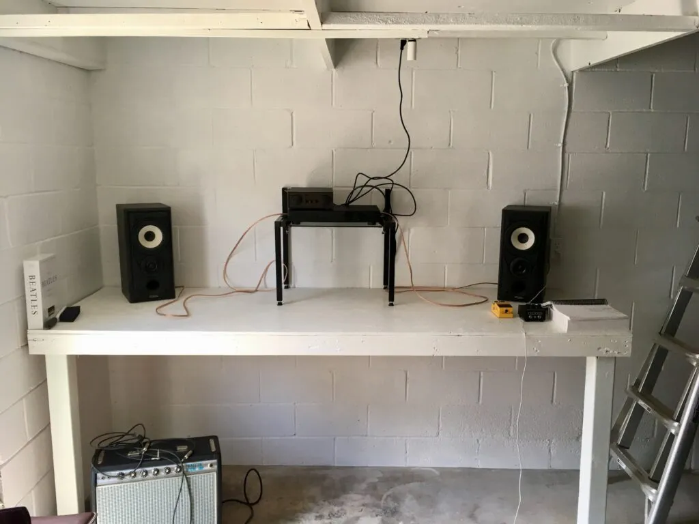
Keen eyes quickly spotted the Naim Nait 2 and Rega Brio, both of which had been sitting in my basement for the previous couple of years as I mostly listened to headphones and did loudspeaker listening with a Schiit Vidar into KEF LS50s.
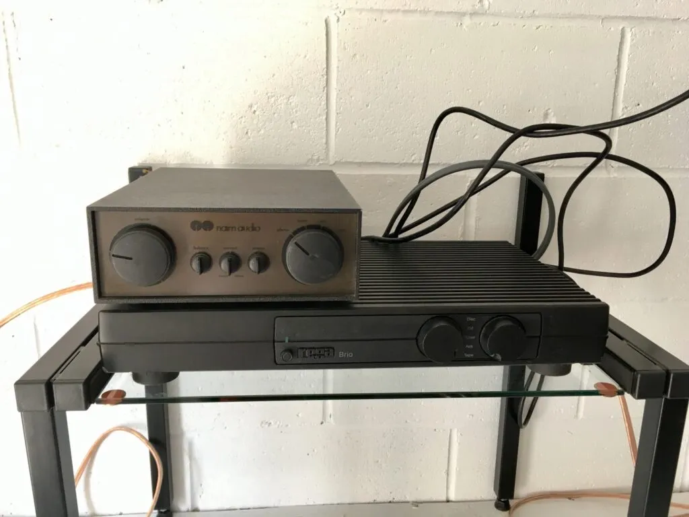
Asked about the two amps, I said I thought the Brio sounded better than the Nait. A fellow AudioFlat member, Nobeone, replied
If the Brio sounds better the Nait needs a service 🙂
Thus began a saga.
In the month since Nobeone made that reply, I’ve gone from knowing absolutely nothing about Naits — and never having soldered anything to a PCB in my life — to having totally recapped my Nait 2.
At every step of the way, Nobeone has provided guidance. He told me which parts to remove, which currently-available components to replace them with, how to do all this, and then how to check I’d done everything right.
(Other AudioFlat members such as YNWaN, sq225917, and TomB offered a lot of help too. It was a community effort.)
In all this, Nobeone was remarkably generous and patient. When I said at one point that it was amazing how much time he was devoting to all this — despite the fact that he was working from home during the lockdown, even longer hours that usual — he said:
I have this information, it needs sharing so people can keep their Naits working without spending an arm and a leg […]. Older kit like this was made for maintaining, it needs keeping working not sending to landfill…
Nobeone acquired this information while working at the Naim factory during a gap year before university. In subsequent years he put this knowledge to use and augmented it while maintaining his 72/HiCap/250×2/Active SBL system. (He’s also had a Nait 2, of course.) Such is his love for Naim stuff that, as he put it, he was happy to do all this work just for the pleasure of knowing “one more Nait is singing like it should.“
Everything you need to know and more about servicing a Nait 2 is contained in the AudioFlat “Garage system” thread. Here, I’ve tried to distill the essential bits and put them in order. But if you want to dig deeper, that thread had many treats in store for you.
This page is my attempt to honour the immense amount of help Nobeone offered me, and to offer it in turn to other owners of Nait 2s. Let’s get many Naits singing like they should!
If you find this guide helpful, please consider making a donation to a charity of your choice — in Nobeone’s name, perhaps! If you do, please leave a comment here or contact us on AudioFlat.
A look inside my Nait 2
Early on in the “Garage system” thread, I was asked to post a photo of the guts of my Nait 2. This is the shot:
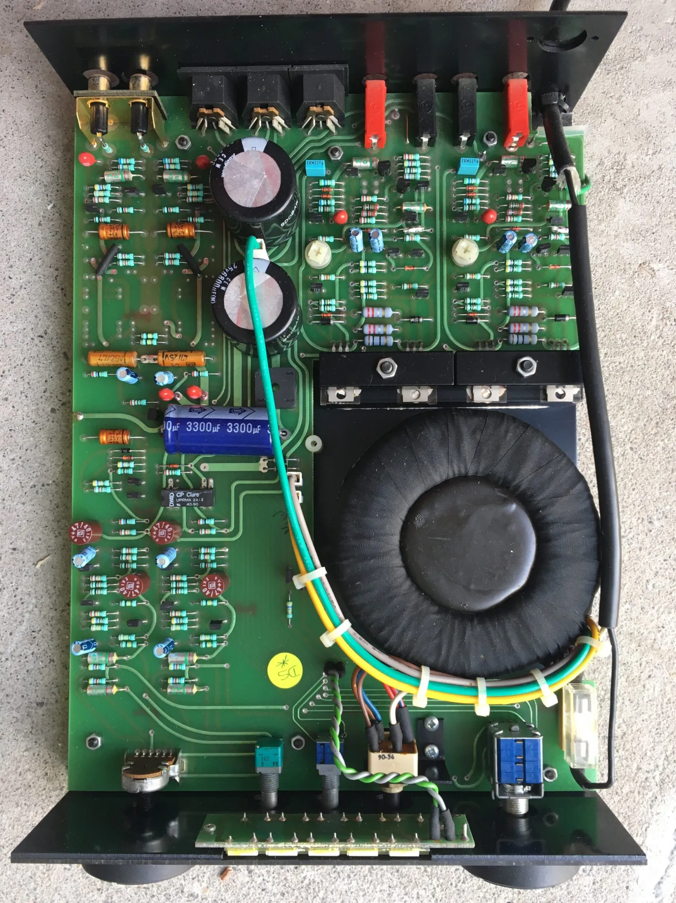
This photo was taken casually with my iPhone, but as you’ll see below, turned out to be quite important!
My Nait 2 is one of the (somewhat rare?) “CD versions,” in which the RCA inputs leads not to an MM phono stage but to a buffered line-level input. Word is these were made for the Japanese market, and tried to counteract the nastier aspects of early CD players. Anyway, that’s why there is all that empty space in the upper left, beside the lower of the big black caps.
Looking at my Nait 2, the smart people on AudioFlat agreed that it had never been serviced — that all parts were original. The serial number dated it to 1991, so nothing had been touched in nearly thirty years. I bought it around 2005, and was told it had been recently serviced — but no great loss, it’s better not having to clean up someone else’s mess, and even if it had been serviced in 2005 it would need another by now.
I had never been particularly wowed by this Nait 2 in the years I’d owned it — but then I’d always lived in apartments with roommates and difficult neighbours (the roommates were always great!) so I’d never really been able to enjoy it. Some back-to-back listening comparisons right before servicing suggested a pretty amazing ability to make music cohere, but also a slightly “chalky,” grainy presentation. In a forest-versus-trees context, it had the forest absolutely right but I wasn’t seeing any leaves.
I was also asked to take a bunch more photos to identify various components. I’ll add those in here for posterity. You never know when a photo of an untouched Nait 2 circuit might come in handy. I found them especially useful for sorting out the polarity of caps when I was adding mine back in. One of my main suggestions for you if you’re contemplating this service is to take a lot of photos of your own Nait before touching anything.
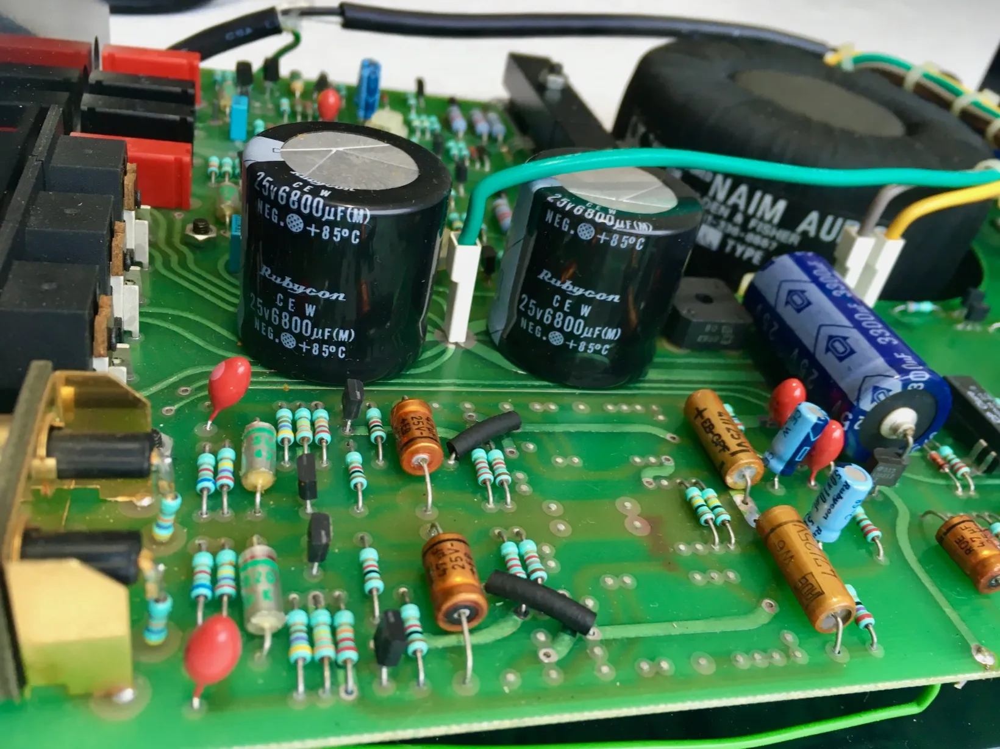
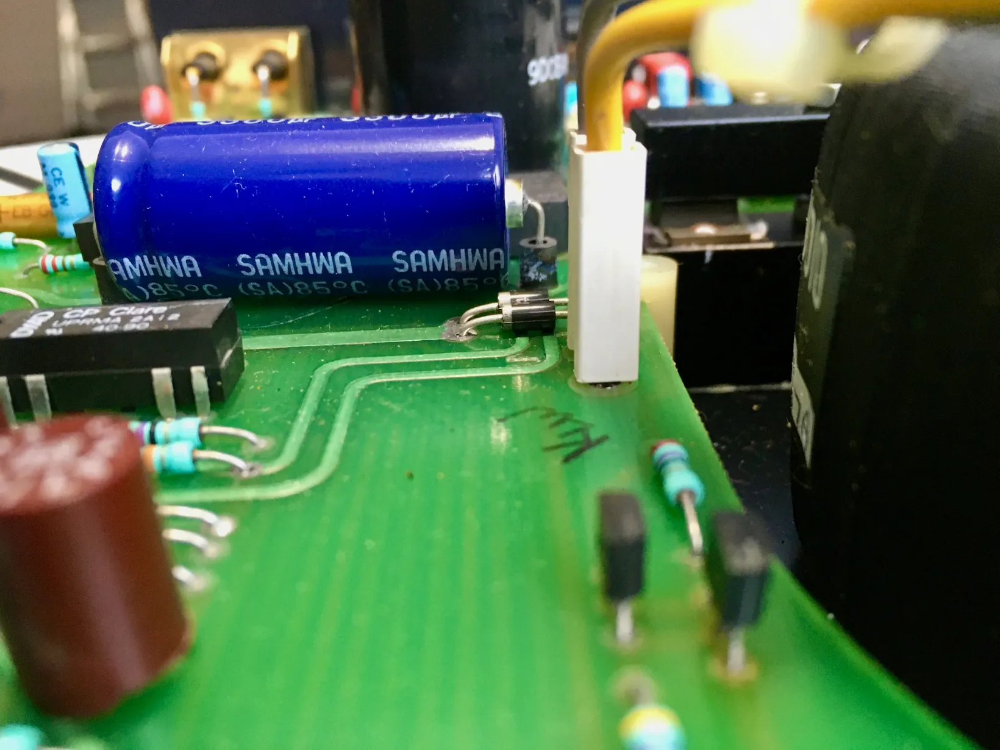
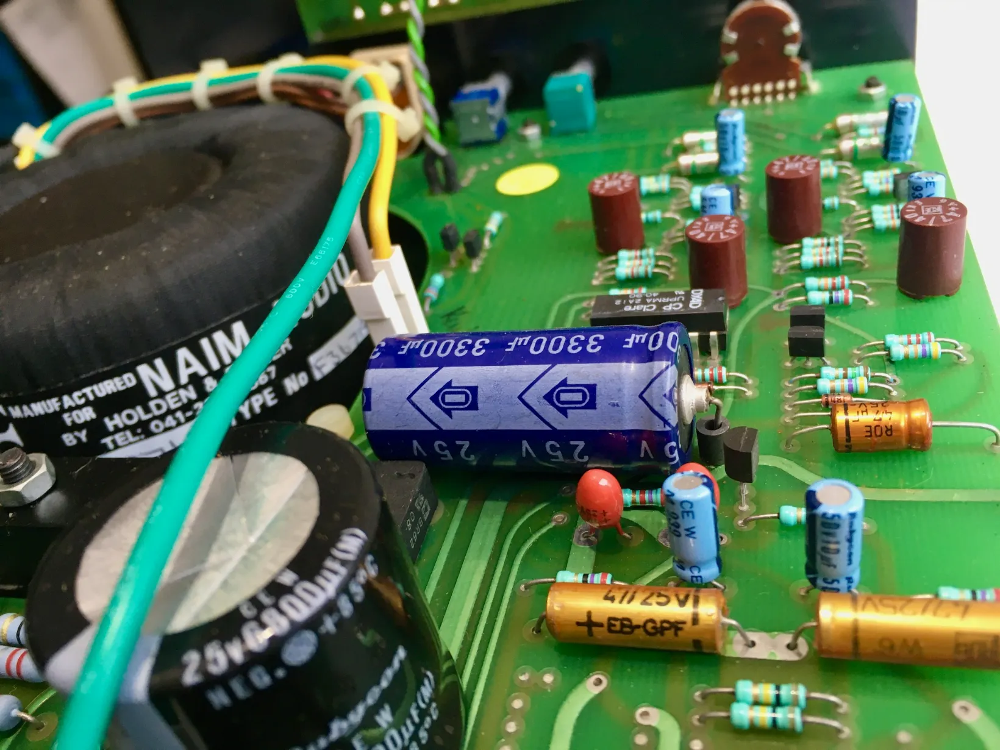
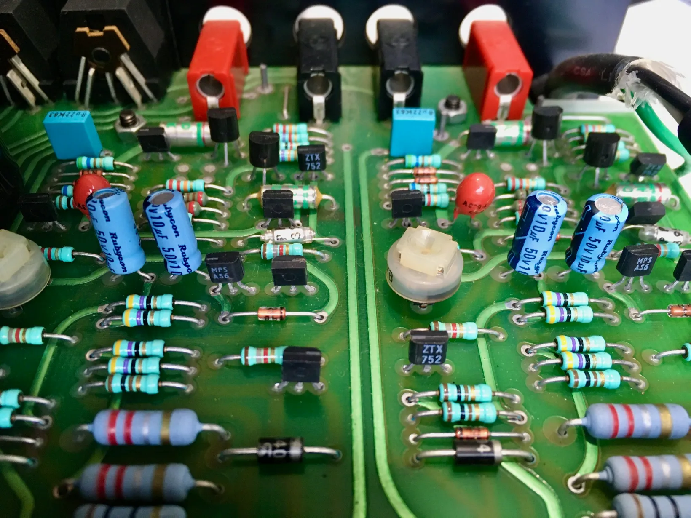
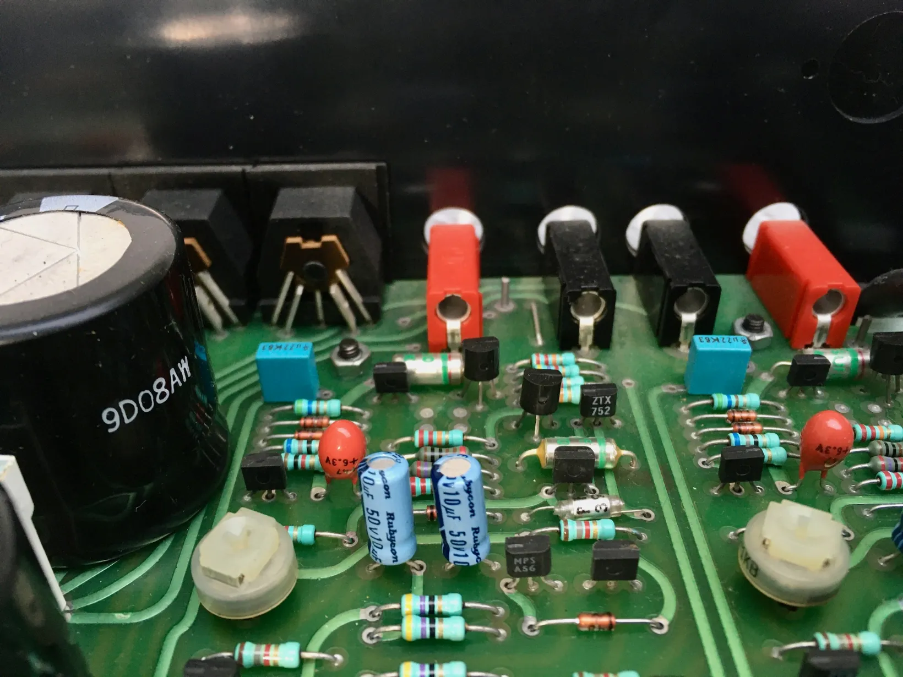
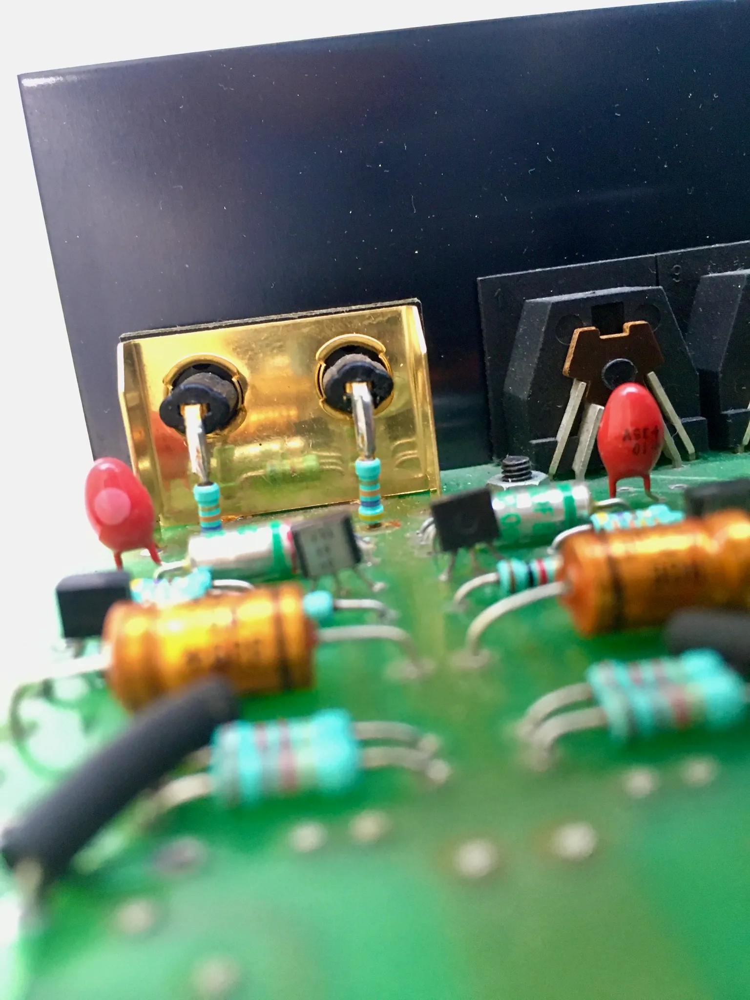
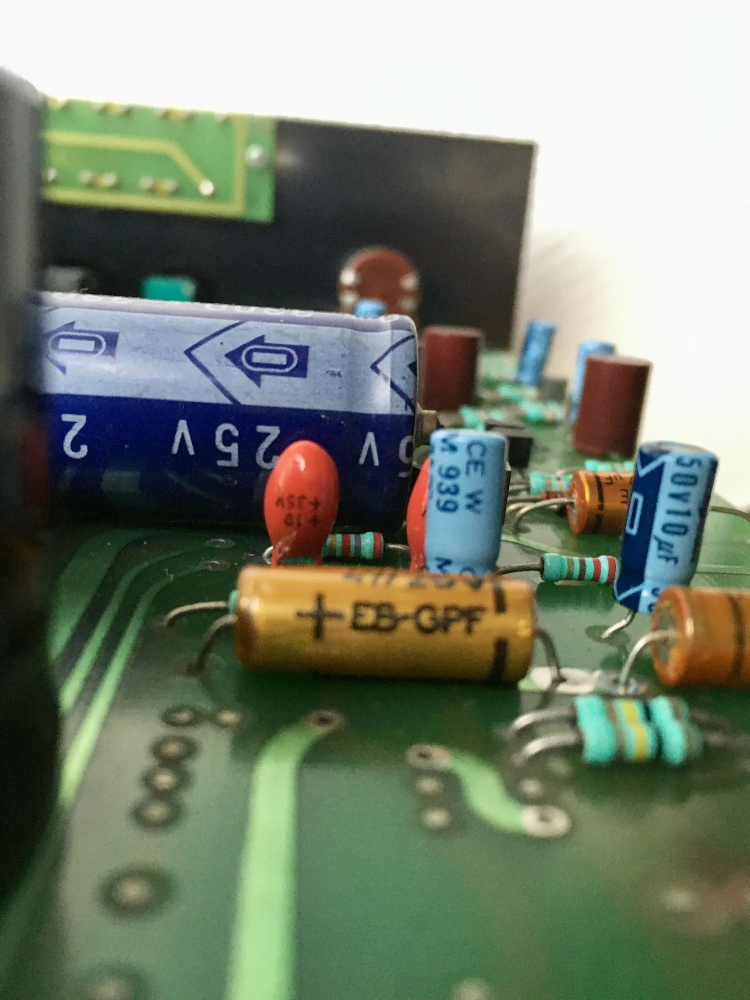
Nait 2 schematic
In the course of identifying components that needed to be replaced and suggesting replacements, Nobeone created a schematic diagram for the Nait 2 circuit. (Note that this is the schematic for the phono-input Nait 2, of which my CD input version is effectively a hack.) This is reproduced for posterity below. Click here to see it full-size or to download it.

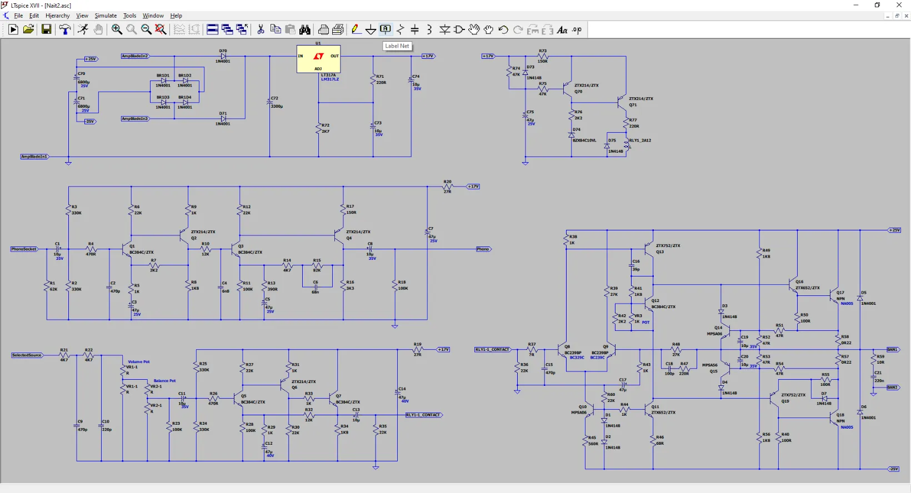
Which components to replace
Based on the above, Nobeone annotated the photo of my (CD-input) Nait 2, indicating all components that needed to be replaced during a recap. To see a full-size version or to download, click here.

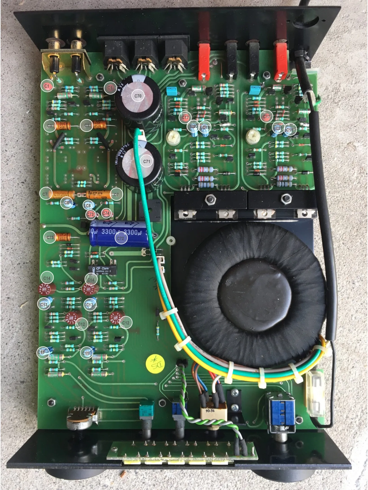
For the phono-input version, everything is the same, except there are two additional caps to replace. Here’s a photo of Nobeone’s Nait 2 showing the location of the two C5 caps:
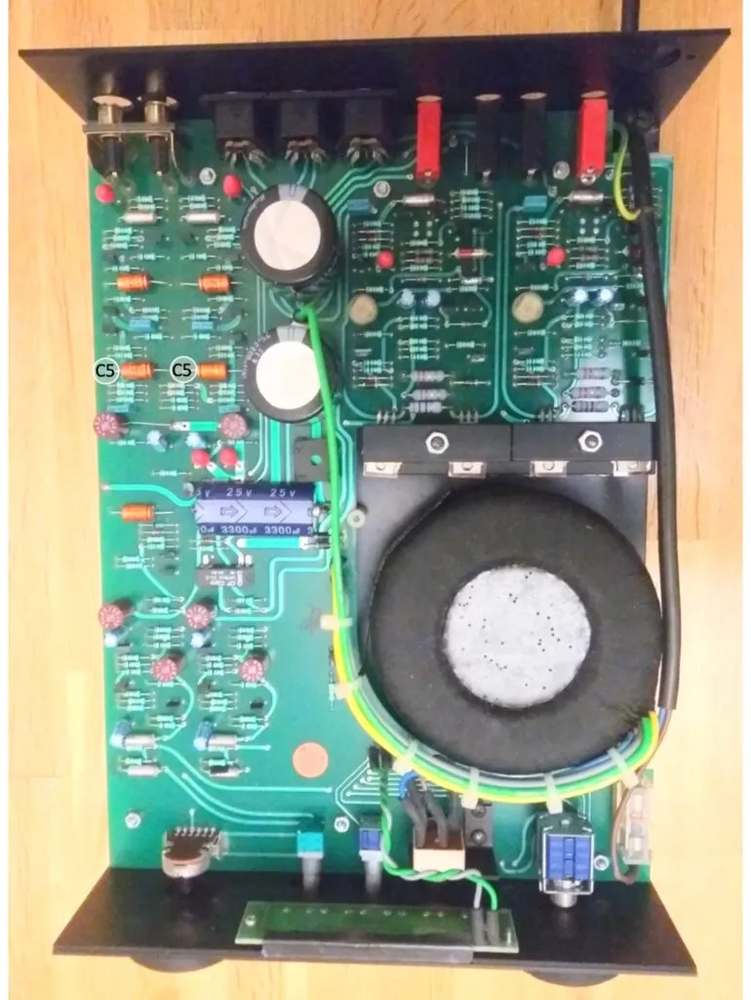
Nobeone offered the following descriptions the function of each of the components to be replaced.
C1 are the CD stage input signal DC blocking/AC coupling capacitors.
C73 and C74 are the preamp regulator capacitors.
These are all 10uF 35V tantalum bead radial capacitors.
C3 are the CD stage feedback capacitors.
In the phono-input version, C5 are phono section feedback capacitors; they’re not present in the CD version.
C75 is the power-on relay delay capacitors.
These are all Roderstein EB 47uF 25V aluminium electrolytic axial capacitors.
C7 are the CD stage power rail decoupling capacitors.
These are Roderstein EB 47uF 25V aluminium electrolytic axial capacitors, same series as above yet longer, I can only assume there is some part of the series specification I am missing, yet I don’t understand what!
C8 are the CD stage signal output DC blocking/AC coupling capacitors.
C11 and C13 are the preamp signal DC blocking/AC coupling capacitors.
C19 and C20 are power amp signal capacitors.
These are all Rubycon CE W 10uF 50V aluminium electrolytic radial capacitors.
C12 are the preamp feedback capacitors.
C14 are the preamp power rail decoupling capacitors.
These are all Roderstein EKI 47uF 40V aluminium electrolytic radial capacitors.
C17 are power amp signal capacitors.
They are 47uF 6.3V tantalum bead radial capacitors.
C70 and C71 are the power amp PSU smoothing capacitors.
These are Rubycon CE W 6800uF 25V aluminium electrolytic radial snap-in capacitors.
C72 is the preamp PSU smoothing capacitor.
This is a Samwha SA 3300uF 25V aluminium electrolytic axial capacitor.
Bill of Materials
I created a template for a Google Doc “Bill of Materials” for Nait 2 servicing, and Nobeone edited and filled it in. The Google Doc we created is available here. This is the canonical version of the BOM, and contains many notes and ideas for alternative component selections. Please consult it directly; the shortened version pasted below is just a quick summary of what I personally chose based on availability and the excellent advice (and excellent footnotes) in the linked Google Doc. Note that you can add comments to this document if you need anything here needs to be addressed.
Below is an embedded version of the Google Doc, but you need to scroll through it in its own oddly-sized window. Unfortunately this is the best I can do in terms of embedding with my limited HTML/CSS skills.
[The original page embedded the parts list here, a Google Doc: see the appendix at the end of this copy.]
Below is a table of the components I personally ordered for my own service, hewing very closely to Nobeone’s recommendations for “Closest to original easily available.” Where I diverged, it was just to choose what was available at Mouser, so that I didn’t need to order from multiple sources. All prices are in $CAD and current as of June 2020. The price links take you to the component’s product page on Mouser, where you’ll find more information.
| ID | Function | hi-fi AF Chosen Component |
| C1 / C73 & C74 | CD section signal input dc blocking / Preamp regulator filtering | 4 x Kemet T354G106K035AS 10uF 35V 10% tantalum bead 6.35mm pitch (Mouser $2.31/ea) |
| C3 / C75 | CD section feedback / Relay delay | 3 x Vishay BC MAL203138479E3 47uF 63V 10% axial (Mouser $1.67/ea) |
| C7 | CD section power rail decoupling | 2 x Vishay BC MAL203138479E3 47uF 63V 10% axial (Mouser $1.67/ea) |
| C8 | CD section signal output dc blocking | 2 x Rubycon 50PK10MEFC5X11 10uF 50C (Mouser $0.35/ea) |
| C11 & C13 | Preamp signal dc blocking | 4 x Rubycon 50PK10MEFC5X11 10uF 50C (Mouser $0.35/ea) |
| C19& C20 | Power amp signal | 4 x Rubycon 50PK10MEFC5X11 10uF 50C (Mouser $0.35/ea) |
| C12 | Preamp feedback | 2 x Nichicon UKZ1H470MPM 47uF 50V 20% 5mm pitch radial (Mouser $0.90/ea) |
| C14 | Preamp power rail decoupling | 2 x Nichicon UKZ1H470MPM 47uF 50V 20% 5mm pitch radial (Mouser $0.90/ea) |
| C17 | Power amp signal | 2 x Kemet T356F476K006AT 47uF 6.3V 10% 5mm pitch (Mouser $2.55/ea) |
| C72 | Preamp PSU smoothing | 1 x CDE / Illinois Capacitor 338TTA025M 3300uF 25V axial (Mouser $5.22/ea) |
| C70 & C71 | Power amp PSU smoothing | 2 x Kemet ALC10A103DC040 10,000uF 40V snap in (Mouser $11.46/ea) |
So, all told — since some parts appear in multiple columns above — the below what I ordered for the Nait 2 service. The total cost was $50 CDN.
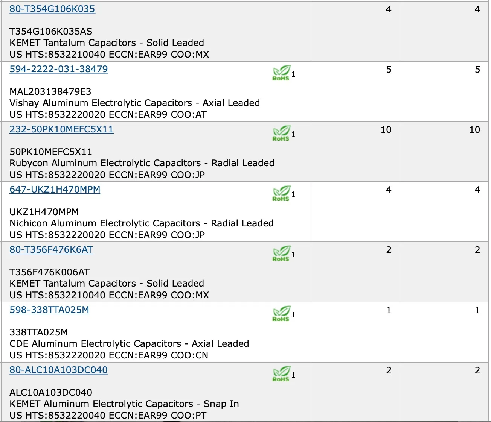
Below are the components I received from Mouser, along with a solder sucker (left, more on it below) and some components for another project you’ll be hearing about soon (bottom right).
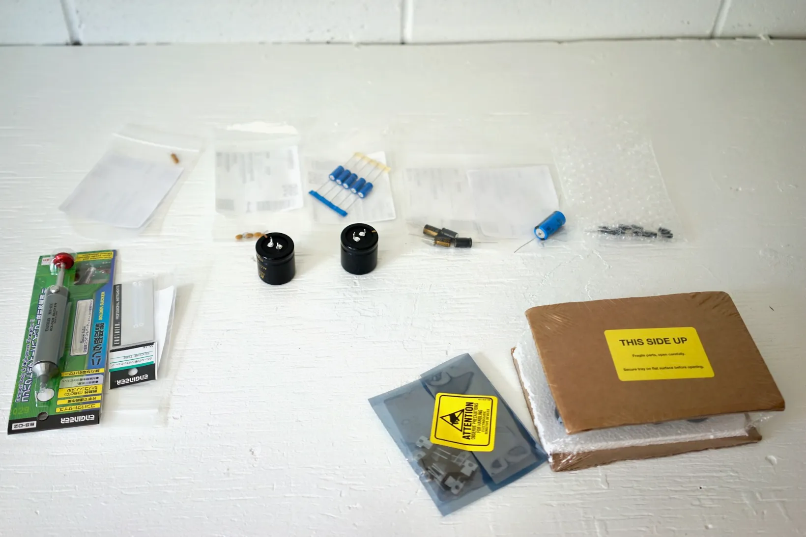
This was surely a bit of overkill, but before doing the service I labelled every part to be replaced manually with tape, and then also checked and doubled-checked what parts in the Mouser bags corresponded to Nobeone’s BOM.
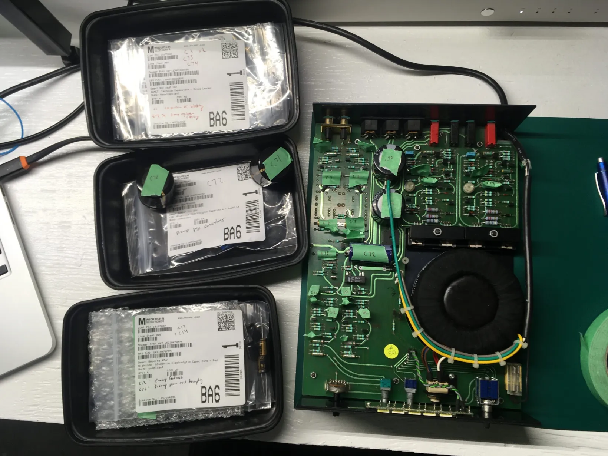
Performing the service
Removing the PCB from the case
Once you’ve got the components and are ready to go, the first thing is to get the PCB out of the case, which is actually a bit of work.
- Unplug your Nait and let it sit for 30 minutes to ensure that the capacitors are discharged, and so that there is no risk of electrocution.
- Remove the self-tapping screws located in the rubber feet at the bottom of the case. Try this first by hand, and follow with a screwdriver if needed. Put them (and everything you remove) somewhere you won’t lose them. I use the black plastic takeout containers pictured above.
- Unscrew the big M6 machine screw that holds the case sleeve to the sled. Slide the sled out of the sleeve. Once the two are separated, you’ll see something like what’s photographed above.
- Before doing anything else, take lots of photos of your PCB. Most crucially, take a photo of the position of your bias pots. The one problem I ran into with my service was accidentally turning one of the bias pots at some point during the service. I wish I’d thought to consult the photos of my PCB before powering on, to make sure I hadn’t moved the bias pots. The photo below shows where the bias pots are on the PCB:
- Carefully remove all the knobs/dials from the front panel. The knobs are valuable and you don’t want to pull the irreplaceable pots from the PCB, so be careful.
- Unscrew the light panel from the front of the sled (two small screws). The light panel will then dangle from the PCB throughout this operation.
- Unscrew the power switch from the PCB.
- Remove the fuse and remove the fuse holder from the PCB.
- Follow the green, grey, and yellow power cables to the white connectors that attach to the PCB. Pull the white connectors (not the wires) away from the PCB by gently wiggling them.
- Detach the ground wire that connects the main board to the grounding terminal (i.e., where you would attach your turntable’s ground wire) at the back of the case.
- Undo the nuts on the power amp heatsink, disassemble the heatsink, and clean off the white thermal paste. (If you don’t have any thermal paste to replace it with — as I didn’t — leave the thermal paste on. Old thermal paste should be fine, but it’s better to replace it.) Note that the mica insulators — the transparent thin “plastic” looking things between the bottom heatsink and the metal tabs on the NA005 power transistors — are fragile, so be careful with them now and in all future steps.
- Carefully unscrew each of the small bolts that hold the PCB to the standoffs. If you don’t have an M5.5 socket (as I didn’t), hold the nuts with a pair of pliers (being careful not to damage the PCB) and unscrew from below with a screw driver.
- Slide the PCB out of the case, being particularly careful not to damage the mica insulators — they are fragile and are needed. Removing the PCB requires some finesse. You’ll want to gently raise the back end of the PCB (speaker terminal end) while sliding the pot shafts out of the front fascia. Mine also required a bit of a sideways twist as the PCB was pressing against the transformer. It will come out but will take a bit of time. Don’t force anything.
When you’re done, it will look something like this:
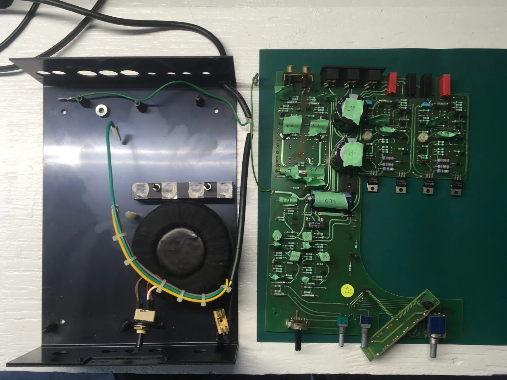
Note that the fuse holder and power switch remain connected to the sled. The light panel and grounding terminal hookup wire come out with the PCB.
Also note that I have it sitting on an anti-static mat. At Nobeone’s suggestion, I wore an earthing strap on my wrist and placed the PCB on an anti-static mat throughout.
Desoldering
If you’re a beginner like me, know that getting the old components out is a lot more work than getting the new ones in. Be prepared for this; desoldering is fiddly and will take a lot of time.
Having never soldered a component to a PCB, I decided to prepare for servicing my Nait by building a DIY guitar pedal kit, which gave me some confidence soldering to a PCB. Not a bad idea, and it was a lot of fun, but it would have been better to desolder a guitar pedal, since that was the crucial skill 🙂
I also watched several YouTube videos about soldering and desoldering. This one was the best — but he’s using a fancy desoldering tool, not a simple solder sucker, so it’s misleading about how much actual work is involved.
Here is the advice Nobeone gave me for desoldering (slightly edited):
- Get some solder on the tip of the iron (aka “tin” or “wet” the tip) and apply to one leg, melt the solder, use the solder sucker to remove as much as you can
- Repeat on the other leg
- Using a tinned tip of the iron, heat one leg until the remaining solder melts, wriggle the component from the other side of the PCB. You can gently push with a soldering iron tip on the leg to poke it back through, swap to the other leg. Bit by bit you will extract the legs. Sometimes they come out easily, sometimes they will need “inching” out, “mm-ing” more like. What you don’t want to do is apply pressure to the pad with the iron. On older PCBs, the pads will lift (not a big deal, push them flat with the iron, glue them back if you need to) or tear (ugly but not an electrical problem, but you will be sad!).
- Clean up the holes ready for the new component, sometimes easiest by putting more solder on and sucking it all back off! Or use desoldering wick.
The special cases he noted — for the three bigger caps — were as follows:
- The main 6800uF power caps (C70+71), those snap-in beasts, will be hard to get out. You will need to be brave, really heat up the joint and get the solder melted, both legs at once if you can, lay the iron right across the legs, and grab the capacitor and wriggle and heat and wriggle. You may need more solder rather then less to get good thermal contact with the iron. When they do come out be careful of splashing solder. Eye protection is not a bad call for this job! I burned myself badly after slipping with an iron in my first few days at Naim, I think desoldering PSU caps from Naits! The women (for they mostly were) in the wiring area of production had hysterics laughing at me or jumped to my aid with freezer spray in near equal measure, so take care! I can still see the scar…
- The pre amp PSU axial 3300uF cap (C72) will have a ferrite bead super-glued to the PCB so each leg goes through a ferrite bead. You want to keep these on the PCB, so if they get removed as you remove the cap, refit them with the new cap, solder the cap down, then with the PCB the right way up, position the ferrite bead against the PCB so the leg goes through the middle and put a drop if super glue down to hold it. Don’t glue then solder, the fumes are right nasty… solder then glue!
In practice, I found that I was able to get most (75% or more) of the components out just with the solder sucker. I used the Japanese solder sucker pictured below (thanks to @sq225917 for the tip, no pun intended), the Engineer SS-02. Who knew I could love a solder sucker so much? The fact that it is so Japanese, both in styling and quality, doesn’t hurt.
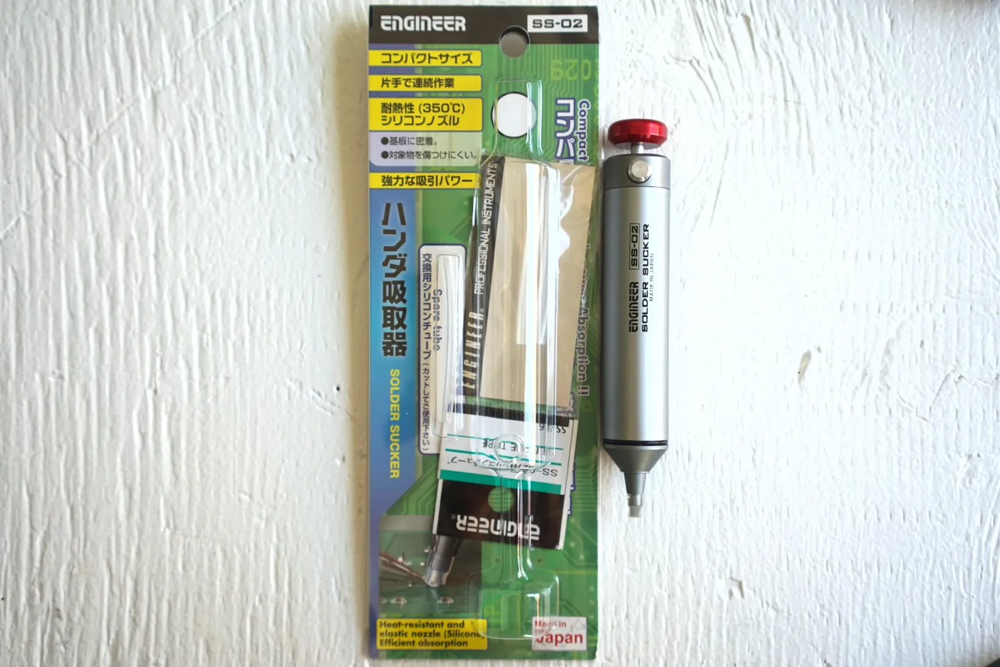
The main process I used was as follows:
- Clean and tin the tip
- Melt the solder on one leg and use the solder sucker to suck it up
- Clean and tin the tip
- Melt the solder on the other leg and use the solder sucker
- Use pliers or cutters to straighten the now-exposed legs, and pull component out from below.
This required more patience than I normally possess, as it really made a difference if you cleaned and tinned the tip after every leg versus trying to to do multiple legs at once. In nearly every case, I left the pad sufficiently free of solder so that the replacement components went right in for soldering.
By the way, I used a new Hakko FX888D soldering station for all this. I had the tip set to 750 degrees Fahrenheit / 400 degrees Celsius for everything except the big C70+71 caps, which I set to maximum (890F/475C).
Here is how things looked after I’d done the desoldering, bottom and top:
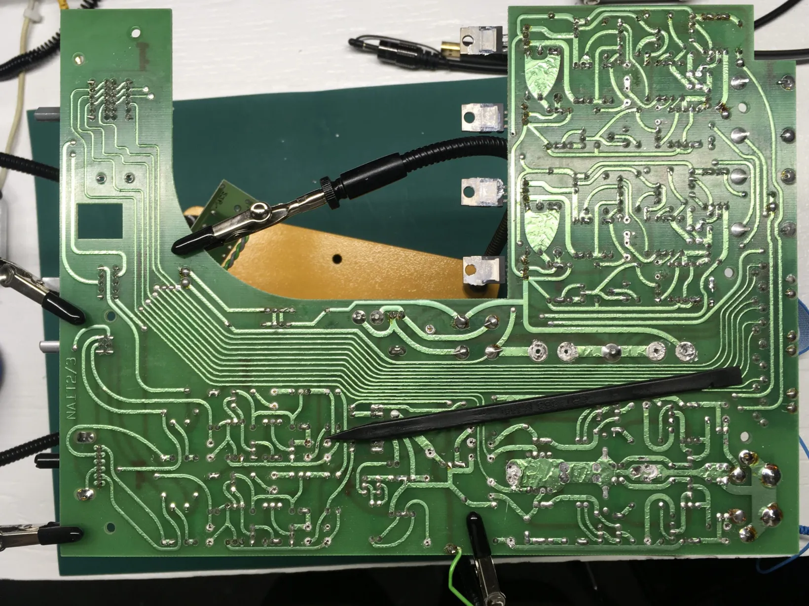
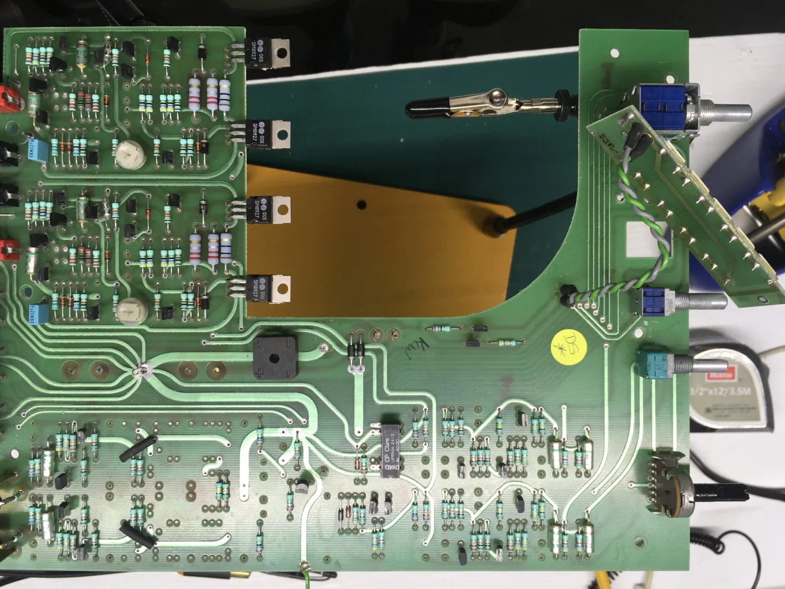
These are the components out of the board. Most were removed non-destructively so they could be re-fitted if you wanted to do that for whatever reason 🙂
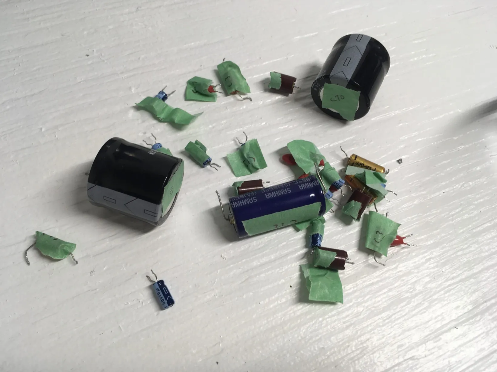
All in all, it took me several hours to get the PCB out and do the desoldering. I did this all in one evening, then waited until the next day to solder in the replacement capacitors.
Soldering in the replacement capacitors
This was easier — but I definitely went slowly and meticulously to make sure I didn’t get anything in the wrong place or the wrong orientation.
I spent the most time making sure I had all the capacitors oriented properly. They are all polarized, so must be put in the correct way. This is where I was happy I took so many photos before desoldering — orientation was always pretty clearly indicated on all the caps I removed, either by stripes, direction arrows, or little “+” signs. The only caps that gave me a hard time were the ROE top hats in C12 and C14. Well, it wasn’t so complicated: just look for the “+” marking on the top.
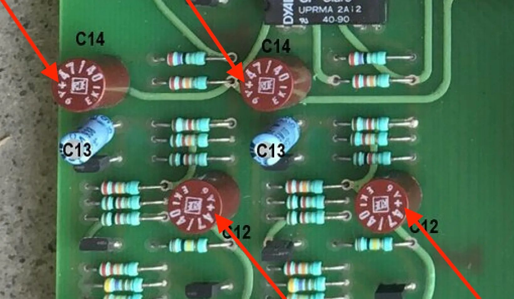
Here are Nobeone’s instructions, which I read through several times before doing any soldering. These were his instructions for what to look for after soldering but I found them very useful to revisit before soldering.
- Firstly double check your work: have you put all the capacitors back in? Did you remember the ferrite beads on either end of C72? Glued back down?
- Are the caps all the correct way round?
- Are they all soldered in nicely, nothing left unsoldered, no solder splashes or unintended bridges to adjacent components? Take your time, a good inspection finds stuff that is surprisingly hard to find in any other way and prevents some nasty surprises!
Everything went in fine, except for three pads that needed to be opened a little more. For each of those, I tinned the pad and sucked the solder out with the Japanese solder sucker, which left a sufficiently large gap to get the legs of the replacement components in.
Here’s everything dry-fitted, except for the three spots where the pads were jammed:
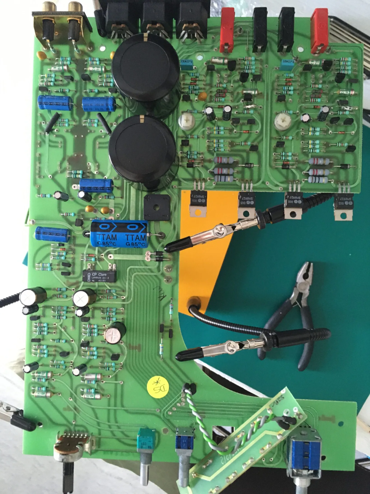
Not much to say about soldering, except that I tried to take my time, and even then it didn’t take long.
Soldered, bottom and top:
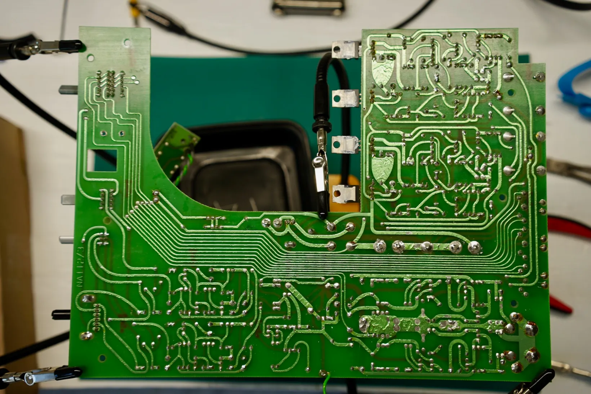
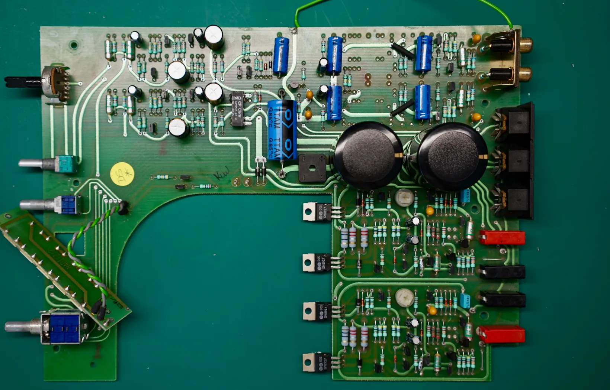
Then I checked everything really carefully again. I did find one leg I’d forgotten to solder to the PCB. Time well spent, as Nobeone said.
Checking your work
With everything soldered in place, it was time to get the PCB back in and check my work. The following is mostly a word-for-word transcription of the advice Nobeone gave me.
- Put the PCB back in the sled but not the sled in the sleeve, reversing all the steps listed above. Make sure the power transistors have their mica insulators back on and that there is still some thermal compound on them, and thenbolt down the heatsink.
- Make sure the wiring goes back in the same places and that all earths are connected. Refer to photos if you’re not sure where to put something.
- Have a good look and make sure the PCB is all reconnected as it was, with nothing floating about and no “spare” fixings to short anything out.
- Refer back to your photos of the bias pots to make sure they’re in the same position as they were before you removed the PCB.
Powering on
Now it’s time to power on.
- Don’t have any speakers or inputs connected, just the Nait on her own. Stand well back and power her up hoping for no magic smoke. Be ready to turn straight off again!
I was very pleased when I powered on my Nait and there was no black smoke!
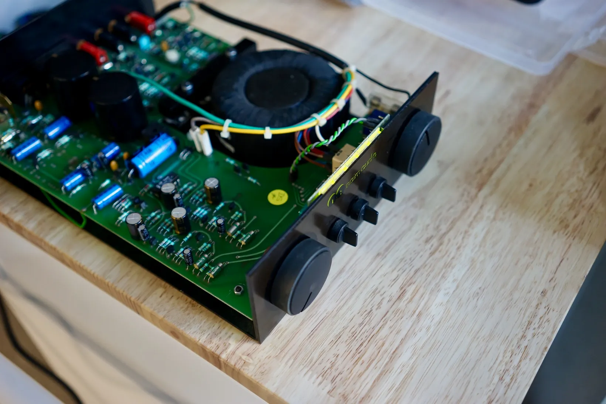
Testing the power rails
Warning! The next steps involve putting probes from your multimeter into a live circuit. BE VERY CAREFUL TO AVOID PUTTING YOURSELF ACROSS THE POWER MAINS.
Also be very careful not to destroy the Nait you’ve just worked so hard to service. One slip of the probe can lead to shorting critical connections and ruin all your work. I didn’t fully realize this danger and ended up shorting two diodes. Thankfully this didn’t do any damage, but it easily could have. Use test clips to reduce the risk here. At time of writing, my own test clips were too bulky to attach to the critical points for the rail tests, so I’ve used my normal probes but approached them from “below,” where there unlikely to short anything, barring a slip of the hand.
So warned, it’s time to test the power amp rails.
You can check the power amp rails with a multimeter from the main earth point (the green wire on the amp blade between C70 and C71) to the +ve of a D5 IN4007 diode by the power amp output transistors (c.+25Vdc) and to the -ve of a D6 IN4007 diode by the power amp output transistors (c.-25Vdc). These are the top and bottom legs of that run of four IN4007 diodes by the power amp output transistors. Here is a diagram supplied by Nobeone (click here for full size):

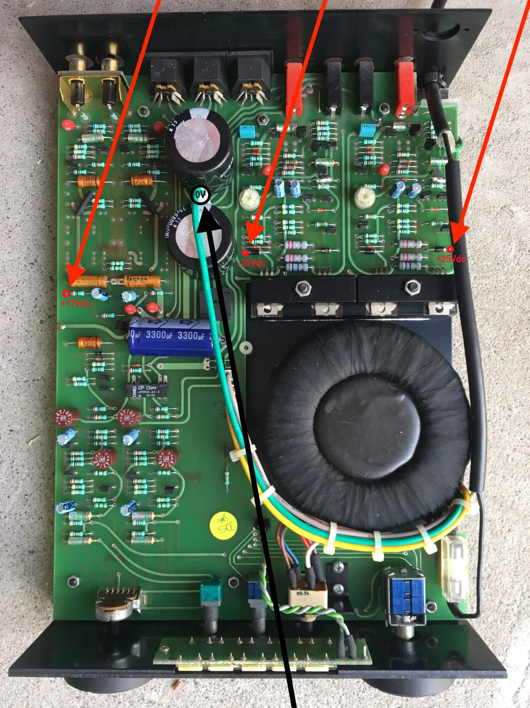
Here’s me checking the two points.. By the way, newbies, set your multimeter to volts DC. I bet you can guess who made that mistake…!
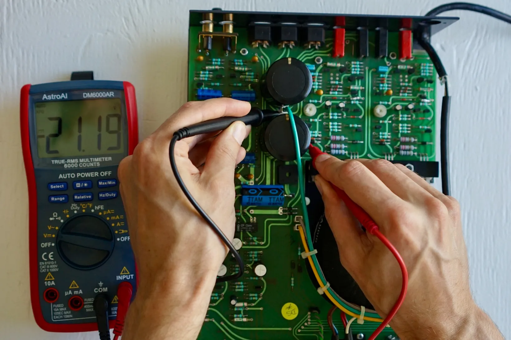
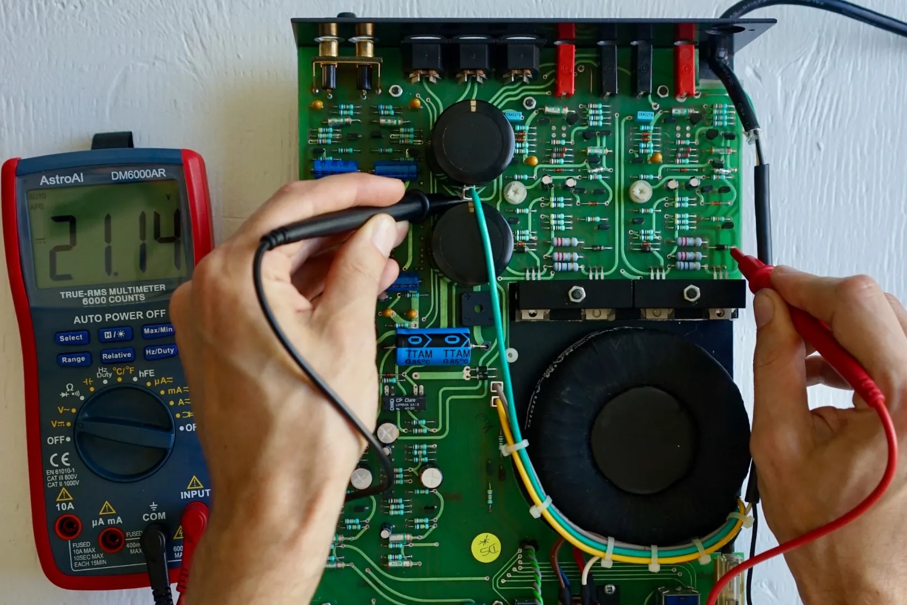
As you can see, mine measures around +/- 21.2V, which Nobeone thought seemed reasonable.
Next, you can check the pre-amp power rail from the same main earth point to the +ve of a C7 on the CD input section (c.+17Vdc). The “perfect” expected value is 16.59Vdc, but anything close to that is more than good enough. The place to take this reading is illustrated above. Here is me checking mine (very close to “perfect”!):
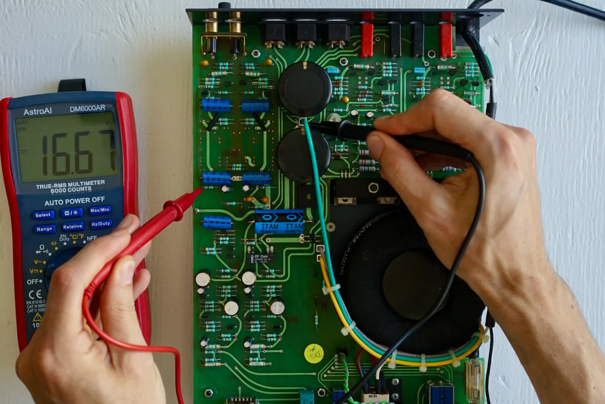
Check DC offset on banana sockets
- Then check the DC offset on the banana sockets. Check both channels from the black to the red banana socket and look for just a few mVdc between them. Don’t connect speakers until you are sure there is no significant DC offset, or “pop” goes the speaker. Stop if you see tens and tens of mVdc!
Check bias
- If that is all good, and nothing is smelling hot, then it is time to check that the bias is sensible. To do so, set your multimeter to mV and check out the following positions (photo annotated by Nobeone; full resolution here):

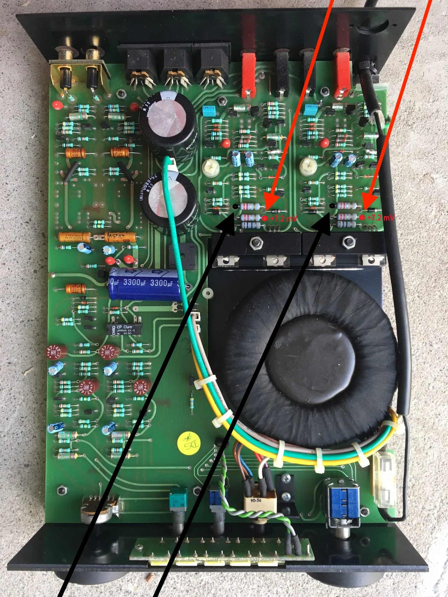
These readings should be taken from cold — i.e., the amp should not be warmed up, and you should take the readings right as you turn the power on. The reading you should expect to get from cold is around 7.2mV — that is where Naim set it.
Here’s a video showing how the numbers rapidly increase when you turn on the Nait. You’re looking for that first reading to be 7.2mV (here it’s 6.7mV, a little low).
Below is what you want to see on power-up. (Note my use of test clips here, which makes this much, much easier — and safer.)
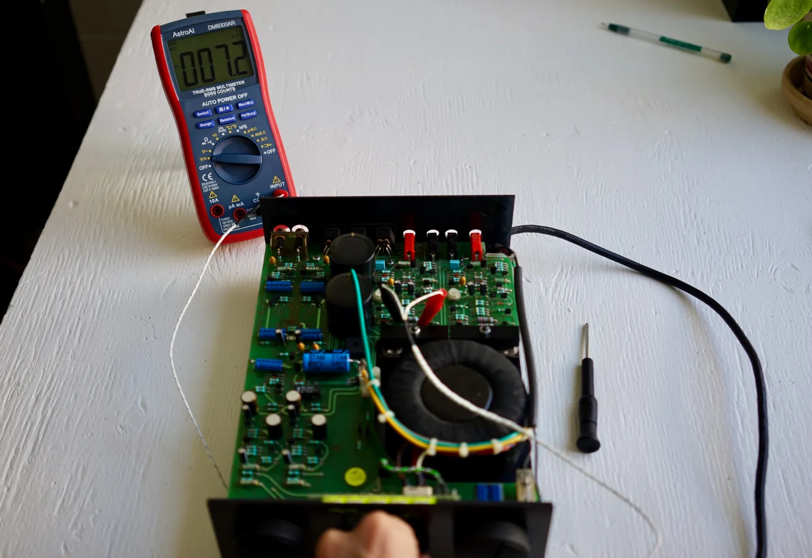
With the initial reading at 7.2mV, my Nait settled in around 12.5mV on both channels after 30 minutes (on a hot Toronto summer day). One channel was very slightly higher than the other, so I adjusted to match, then checked that I got the same value from both channels on power up. Note that the bias readings drift a little bit when the amp is warm, plus or minus about 0.5mV. If you blow on the circuit, it lowers the bias reading by about 1.0mV 🙂
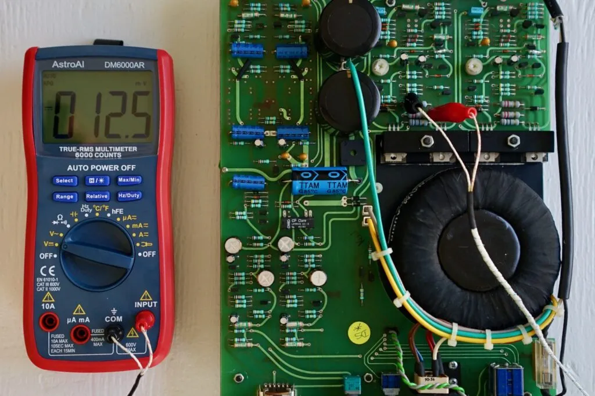
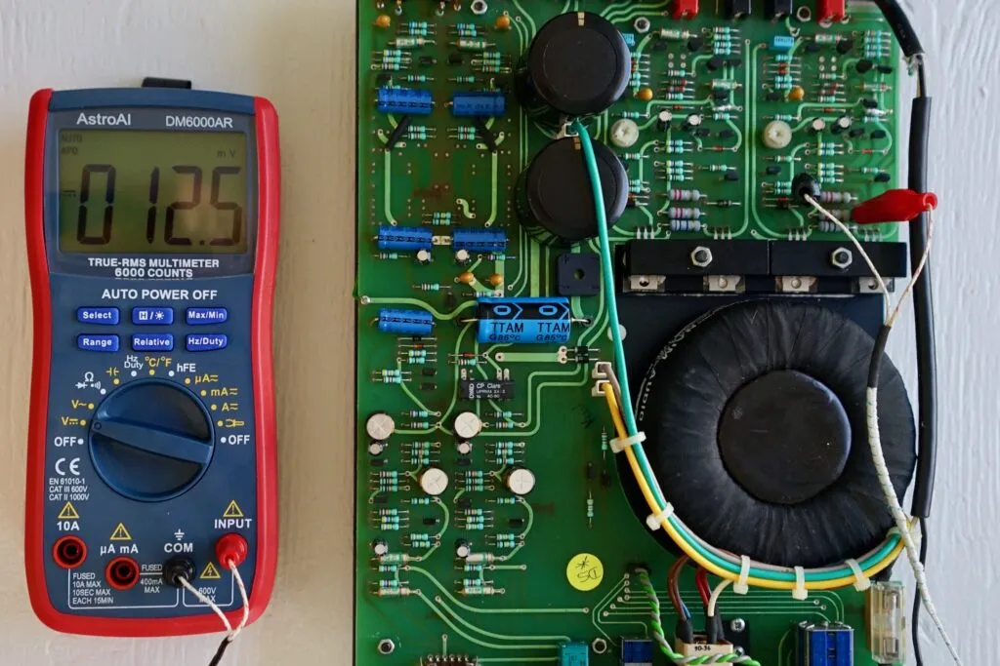
For further reading on Naim bias, Nobeone recommends this post by Martin Clark and these two threads (here and here) on pfm.
When I initially did the service (and before I bought a decent multimeter — this one doesn’t show mV!), my reading on the right channel was way out.
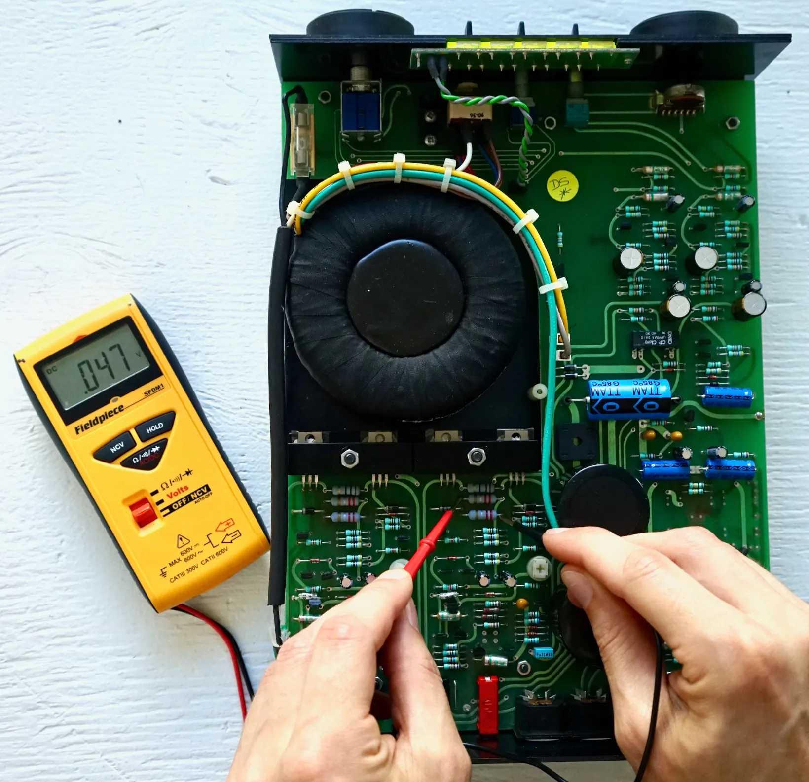
Even without mV display, you can see that it’s much too high (this is warmed up; it was 22mV from cold). Looking back through the pictures, it’s petty clear this was my fault — I clearly moved the pot at some point; it’s in a different position in the “before” shot posted throughout here.
Anyway, if you find that yours is way out, too, skip to the next section, where I show you how to adjust bias — then come back here when you’ve got it set. Otherwise, leave well enough alone, and keep going — you’re almost there!
- Once all this is OK, power it all down, get your least favourite speakers and source and see if it makes music. If it does, it is time to put the sleeve back on and give it a real go.
Here’s me testing my Nait with some old Mission 701 speakers and my iPhone as a source. Don’t tell anyone I consider them my least favourite:
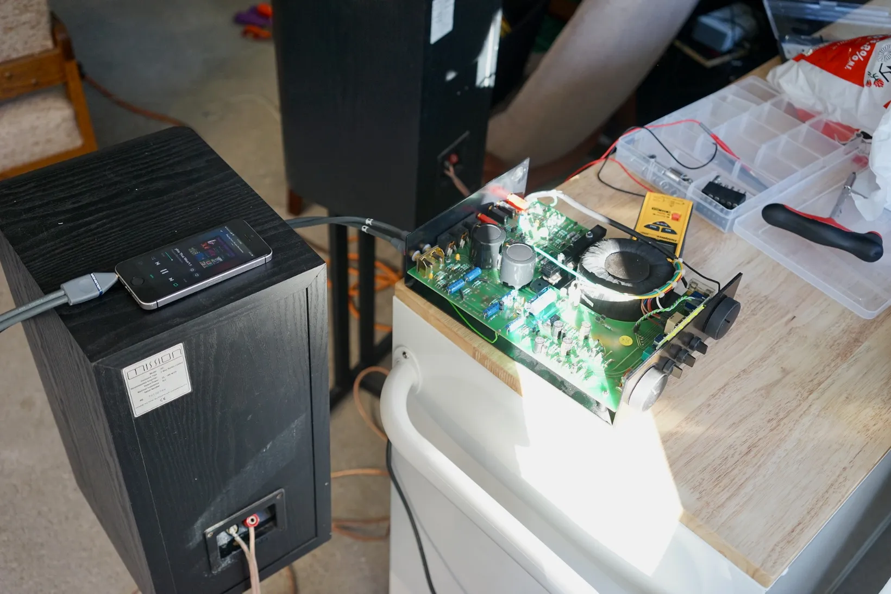
Adjusting the bias
Initially, when I did the above step, I did hear music. But when I connected the Nait 2 to my proper speakers — lovely Yamaha NS-1000Ms, about which I will write much more in coming posts — I heard a pretty nasty buzzing coming from the amp at idle. It sounded like this:
Some buzzing from a Nait 2 is normal, but this was more than normal — I could hear it from my listening position; indeed, I could hear it above surface noise between tracks on vinyl. I knew the amp was out of bias at this point, so I hoped that adjusting the bias would sort it out. (I really hoped it wasn’t the diodes I shorted white probing the power rails!) The good news is that it did.
Here’s what I did. From cold, I was getting readings above the Naim-approved 7.2mV on both channels, and the readings were different on the two channels. Even with my inadequate multimeter, this was apparent: the left channel was around 8mV from cold and the right channel about 22mV (!).
Bias is adjusted with the pots indicated below by red arrows, one for each channel. (The little vertical line is where I produced a short while testing the power rails, in case you’re curious!)
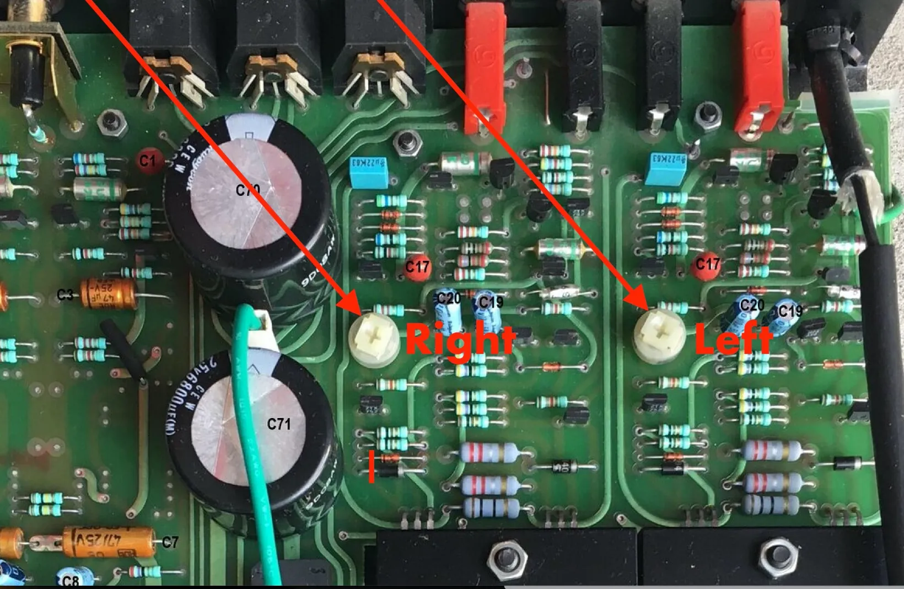
Very little turning is needed to adjust the bias. A quarter turn will make a huge difference — way too much. To make an adjustment, power the amp down, then turn the pot a tiny amount — the least you can manage — and then power up and take another reading from cold. Then power down, adjust, and repeat.
Note that a clockwise turn will decrease the bias.
After some meticulous fiddling, I got the bias from cold down to 0.007V on my inadequate multimeter. (Later, once I’d got a better multimeter, I verified this and found I’d got both channels pretty much right and dead even.) Then I got the case back together, let the amp warm up, and the buzz was almost completely gone — now totally inaudible from the listening position.
Listening impressions
Well, that header is a tease. For now, I’ll just say that my Nait 2 sounds terrific. I’ll save detailed listening impressions for a future post!
Thanks and appeal for charitable donations
I would like to conclude with another massive thank you to Nobeone for the incredible amount of work he did in helping get my Nait 2 “singing again.” Getting the schematic together, meticulously researching all the parts (including finding me the best prices… in Canadian stores, no less!), and then offering immediate tech support as I fumbled my way through the process… I am truly grateful!
If this guide has been useful to you, I would suggest making a donation to a charity of your choice — perhaps even make it on behalf of Nobeone! I’ve just given a small donation in his name (well, screen name!) to our local cat rescue, Annex Cat Rescue.
Please leave comments and questions below, and if you make a donation, please note the charity in the comment.
14 Comments
Join the discussion and tell us your opinion.
Hello, do you know if the Nait CD connects the signal earth to the Mains earth (.i.e like on Naim CD players). Great video.
Thanks! I’m afraid I don’t know, but it’s discussed here: https://www.pinkfishmedia.net/forum/threads/naim-nait-2-restoration-project.240603/
Great job ! and thank you for all these information for the NAIT 2
Hi, thanks for the comprehensive account of your recap journey. Would you be willing to share the serial number of your Nait 2? I just took delivery of an olive Nait 2 CD version that received a DIY recap based on your template (what are the odds?). I am wondering if I have this very unit, or if it’s a coincidence that yours and mine are both CD versions recapped in the same manner. Mine is 73951
Ooh, nice to hear that the Nobeone guide is being put to use! Thanks for letting me know. How are you finding it??
Mine is serial number 71423 — so they’re not the same one, which is a relief, since I was pretty sure mine was still in my basement 🙂
Awesome writeup, thank you – I’ve been planning to recap my Nait2 CB that I’ve owned since about 1990. Wondering – did you consider or ask about either (1) replacing the volume or balance pots to something better, especially to eliminate the famous low-level imbalance or (2) doing any modifications, such as the ones recommended on Acoustica – some claim they make sense and improve the sound, others claim you’d be crazy to mod an original Nait 2 (which is probably where I am, but figured I’d ask).
Hi there! Yes, Will and I considered and discussed all the Acoustica mods — and ALL mods — but thought it would be most useful to write up a “sympathetic recap” guide. After recapping my own Nait 2, I ended up buying a 32.5 preamp and 135 monoblocks, so I stopped tinkering with it. But if I’d kept going, I would have done a mod to reduce gain (this solves the low-level imbalance issue without the messy business of replacing the volume pot), switched to a different LM317, and gone to lower ESR power rail caps. Indeed, I bought the parts to do all these things and will try them when I get a Nait 2 back into the system. Details of my and Will’s discussion here: http://www.audioflat.co.uk/viewtopic.php?f=7&t=1087&p=31968&hilit=volume+mod#p31968
Thanks hifaf. My Nait 2 is sounding fantastic – the same classic Nait 2 sound I remember from owning one previously.
So good to hear!
Using this post as guideposts, I did a recap on an original v1 NAIT recently. Since I also had access to a dealer-recapped example, I synthesized the info and posted a handy parts list for a recap of that amp. Here it is, for anyone looking to do this work on an original NAIT. They’re very similar, nothing to be scared of. https://bzotto.medium.com/naim-audio-nait-capacitor-list-e2bdf87ab61c
un altro Nait 2 è stato restituito al suo funzionamento corretto! Grazie dall’Italia. Il mio è ns 69069.
Qui troverai delle belle immagini: https://www.flickr.com/photos/192773668@N03/
Very good description of upgrading the Nait2!! I´m going to do so on my Naim, this one has serios problems.
Could you please send me the LTSpice File, so i can better find the fault. One Channel is too hot, The other one has an DC Offset of -3,3 Volts.
Kindly Regards – Ralf
Hi again, I emailed you exactly a year ago and just took my Nait apart this morning (got the board out no problem). Couple questions:
1) The parts list is very helpful. Just wondering, you mention Elnas but opt for Nichicons… I’ve read in numerous places that Elnas sound better in the signal path, while other caps are fine in the power supply. I’ve also heard about using Dubiliers for the PSU smoothing caps, which is what I found as the preamp PSU smoother in my own all-original Nait! Elnas and Dubiliers are readily available at Mouser. Did you/Nobeone ever discuss this? (TBH, I’m not sure the caps make a noticeable difference to the sound).
2) You mentioned switching the LM317 for a LM317T (or maybe a LT1086 or a more sophisticated regulator). Do you know if that’s a simple swap, or do the adjustment resistors have to be changed to keep the output voltage right?
Thanks again for the great writeup!
I now see that the Elnas are not available in axial (at least not at Mouser), but presumably can use Elna radials for all 3 pairs of feedback caps (C3, C5, C12). Hard to know if that will make a difference (or cause a problem) but people seem to like the Elnas.
I see you spec a Dubilier for the preamp smoother C72, where my Nait came with Dubilier… I wonder why Naim (and you) didn’t spec Dubiliers for the power amp smoother (C70 & 71) instead of the higher-capacitance, higher-voltage Kemets.